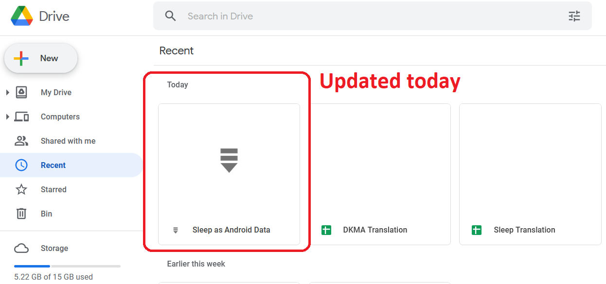
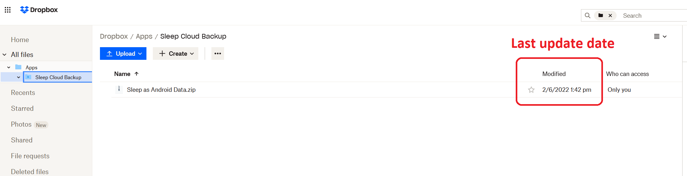
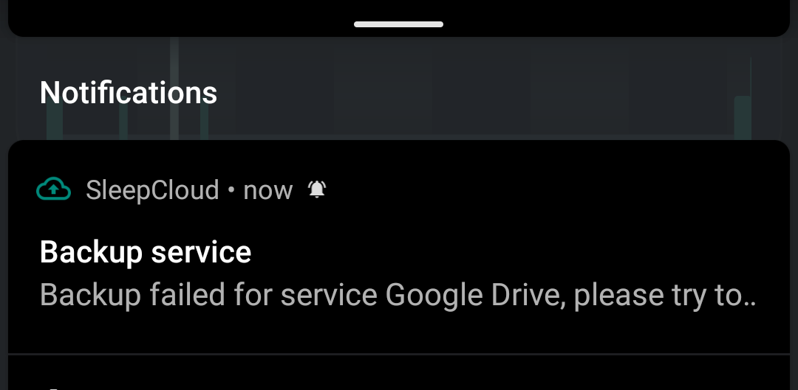
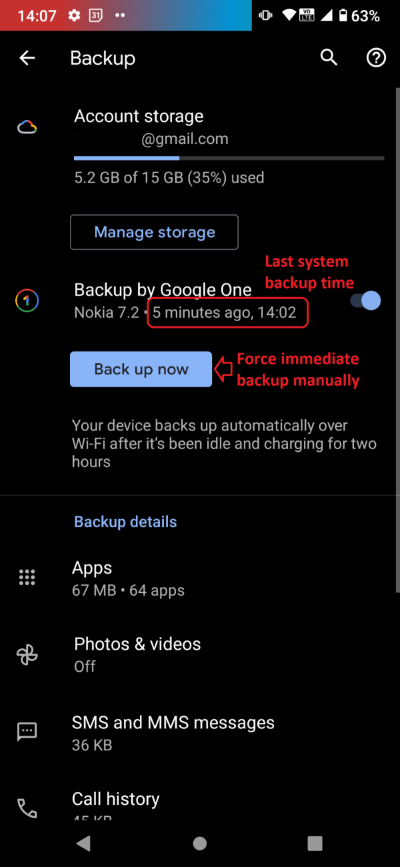
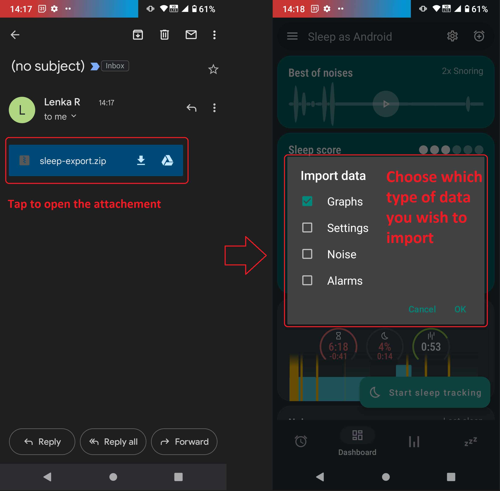

Make sure to never lose your data with either local manual backup or automated cloud backup.
Left ≡ menu -> Backup Settings -> Services -> Cloud backup Settings -> Privacy -> Backup
- // Google Drive: See Google Drive
- // Dropbox: See Dropbox
Local backup#
- Backs up: Sleep records, Settings, Noise recordings, Noise recordings metadata, Active alarms
- Does not back up: Inactive alarms
Your data are being backed up on a daily basis to a dedicated folder on your phone (the exact location depends on the Android version, based on Settings -> Personalize -> Privacy -> Storage path).
You can also start local backup manually using Left ☰ menu -> Backup -> Export data.
Warning: Do not use if you plan to reinstall the application or delete the application data! If you want to use manual backup for these purposes, tap the SHARE button in the dialog and save the file to another location, attach it to an email, or save it to a cloud service.
What is backed up in this folder:
- /rec folder: Contains all your recorded noise files.
- noise.json: Noise metadata
- prefs.xml: Settings
- sleep-export.csv: Latest sleep data
- sleep-export.backup.csv: Sleep data from the previous backup
- ZIP file: all the above (except /rec folder) are zipped up here for easy sharing
You can also open the CSV file on your computer (e.g. in Excel) for your own analysis of the sleep tracking data. The structure of the CSV file is documented here.
How to import / export in the app - manually#
You an also do a manual export/import process:
- Go to the Left ☰ menu -> icon:ic_cloud_upload[] Backup -> Export, and make sure the dialog says “successful”.
- Copy the directory you see on the dialogue to your new phone’s SD card.
- Install Sleep as Android on the new phone and immediately go to Left ☰ menu -> icon:ic_cloud_upload[] Backup -> Import.
Note: If you don’t import immediately, the app will replace your
sleep-export.zipfile after the next sleep record is created. The oldsleep-export.zipfile will be renamed tosleep-export.backup.zip. See solution.
How to share the manually created backup#
For even easier migrating to a new phone, you can use your email, or cloud storage (like)
- Go to the Left ☰ menu -> icon:ic_cloud_upload[] Backup -> Export.
- When a dialogue “Successful backup to your local storage” appears, choose “Share” button.
- Now, you can choose your email client, and the backup zip file is attached to the body of a new email.
- Send it to yourself.
- Open the email client on your new phone, open the email, and tap on the attachment.
- You will be asked which data you wish to import - select all types of data you wish to import, and submit - see how it looks like.
Backup to SleepCloud (recommended)#
- Backs up: Sleep records, Settings, Active alarms, Noise recordings metadata
- Does not back up: Noise recordings, Inactive alarms
Recommended backup service. It stores data in our own cloud designed for Sleep as Android. It has several unique features not present in other backup methods.
Read more about SleepCloud addon and account here.
Backup to Dropbox or Google Drive#
- Backs up: Sleep records, Settings, Noise recordings metadata, Alarms
- Does not back up: Noise recordings
To automatically backup your data to Dropbox or Google Drive:
- Install SleepCloud Backup add-on.
- Go to Sleep -> Settings -> Services -> Cloud backup and connect either Google Drive or Dropbox.
- The back up service will create a Sleep as Android folder within the Google Drive storage, and Sleep Cloud Backup folder within the DropBox service.


Note: If the backup to a cloud service fails, you will see a notification in the notification center. If this happens, please contact support@urbandroid.org.

Backup using Google provided backup cloud#
- Backs up: Sleep records, Settings, Alarms, Noise recordings metadata
- Does not back up: Noise recordings
Most Android phones support Google provided backup. This is an optional feature and it must be explicitly enabled by the user.
Note: We recommend using other methods, preferably SleepCloud, to backup your sleep records, as we have no direct control over initiation of Google backup so it may not work in all cases. This method is NOT meant to be used for synchronization of data or settings across phones.
- Enable Backup to Google One in System Settings -> System -> Backup (might be hidden under Advanced options) -> Back up by Google One - the system will backup to a Google cloud automatically in background, or you can force immediate back up with “Back up now” button.
- In case you have developer tools available, you can force Google backup and restore to get reliable results. To force the backup, you can run “adb backup -f sleep-backup.bk com.urbandroid.sleep” when the old device is connected and to upload the backup to a new device run “adb restore sleep-backup.bk”.

Import data from email, Google Drive, Dropbox#
If you tap on the CSV or ZIP file that was exported from Sleep (anywhere - in your email attachment, Drive, Dropbox, file manager), the system will offer to open it with Sleep as Android. This will import the included sleep records.

Import sleep noise files#
If you wish to import sleep noise files to a new phone, you need to do this manually by copying the folder to the storage on the new phone.
- Save the content of the folder you have as your storage path on the first phone - you can find the storage path at Settings → Sleep Noise recording → Storage path.
- On the new phone, decide a location for your new storage path.
- If you copied the whole folder with sleep-data folder, copy the whole folder to the chosen location on the new phone.
- If you copied only the sound files, create folder sleep-data in your chosen location, and inside this folder, create a sub-folder rec. And copy the files to this rec folder.
- Choose the storage path on the new phone in Settings → Sleep Noise recording → Storage path to your_chosen_folder (not to the *your_chosen_folder\sleep-data\rec* subfolder).
- Sync the backup file - the sound meta-data will pair with the files copied.
Note: The actual sound files should be in **your_chosen_folder\sleep-data\rec**.